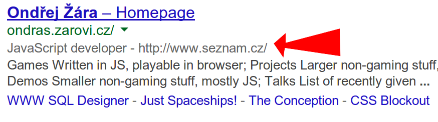

Tvorba klientských aplikací v JavaScriptu
Tvorba klientských aplikací v JavaScriptu
- Webová interaktivní prezentace
- "?" zobrazí krátkou nápovědu
- Tisk jako obvykle
- Pro pokračování stiskněte mezerník
Obsah
- O předmětu
- Opáčko
- Rodina technologií HTML5
Co jsou JavaScriptové aplikace?
Představení předmětu
- "Moderní" webové technologie na klientu
- HTML5, CSS3, JavaScript
Organizace
- Klasifikovaný zápočet
- Semestrální práce
- Přednášky: RNDr. Ondřej Žára, Seznam.cz
- Cvičení: Bc. Zdeněk Vlach, Seznam.cz
Kniha!

- JavaScript – Programátorské techniky a webové technologie
- Vydává cpress.cz
- Určeno pro zájemce o JavaScript po absolvování základního kurzu
- Povětšinou jen JS, méně DOM rozhraní
Opáčko: koncept HTTP
- HTTP je textový komunikační protokol
- HTTP je bezstavový
- HTTP požadavek obsahuje hlavičky a volitelně tělíčko
- HTTP odpověď obsahuje hlavičky a volitelně tělíčko
- HTTP přenáší cokoliv, nejen HTML
Jdeme s dobou: HTTP/2
- HTTP též prochází pozvolnou modernizací
- V roce 2015 vyšla verze HTTP/2
- Mnoho novinek, mimo rozsah předmětu
- Slušná podpora klientů, na serveru horší
- V praxi jen ve spojení s HTTPS
Opáčko: koncept HTML
- HTML je značkovací jazyk
- Do prostého textu jsou doplněny značky
- Množina a význam dostupných značek se mění s verzí standardu
- Stavební kameny: značky, atributy, entity, komentáře, …
Opáčko: webové prohlížeče
- Webový prohlížeč je neuvěřitelně komplikovaný software
- Komponenty: síť, renderer, interpret JS
- Prohlížeče na desktopu, mobilních zařízeních, ostatní (TV, ledničky, …)
- Mozilla Firefox, Google Chrome, Opera, Internet Explorer / Edge, Apple Safari
Standard HTML5
-
 +
+  (Web
Hypertext
Application
Technology
Working
Group)
(Web
Hypertext
Application
Technology
Working
Group)
- Mnoho rozdílných požadavků na standard:
- Zpětná kompatibilita
- Zpracování chyb
- Jednoduchost použití
- Podpora pro skriptování
Standardizační proces

- Editor Ian Hickson
- Aktuálně
Working Draft Recommendation
- Living standard
- 7MB, 104k řádek
- Vývoj pomocí mailinglistu whatwg@whatwg.org
- Dozorčí rada (WHATWG members)
- 2004 –
2022 2014
Rodina technologií HTML5
- Značkovací jazyk
- Definice zpracování chyb
- CSS3
- ECMAScript 5, 6/2015, další verze
- Nová JS API (canvas, websockets, storage, geolocation, …)
Minimální dokument HTML5
Validní!
<!doctype html>
<title>This is a title</title>
<p>This is a paragraph.
HTML5 versus XHTML
- Neexistuje žádný "XML-friendly" dialekt HTML5
- HTML5 je možné psát tak, aby zůstalo validní XML
- Polyglot markup
- Speciální doctype, uzavírání značek, atributy s hodnotami
RDFa, mikroformáty, mikrodata, JSON-LD
Různé techniky pro označování sémantických dat v HTML
<p>
<span>Ondřej Žára</span>
<span>Seznam.cz</span>
<span>JavaScript developer</span>
</p>

RDFa, mikrodata, JSON-LD
<!-- RDFa -->
<p xmlns:v="http://rdf.data-vocabulary.org/#" typeof="v:Person">
<span property="v:name">Ondřej Žára</span>
<span property="v:affiliation">Seznam.cz</span>
<span property="v:title">JavaScript developer</span>
</p>
<!-- Microdata -->
<p itemscope itemtype="http://data-vocabulary.org/Person">
<span itemprop="name">Ondřej Žára</span>
<span itemprop="affiliation">Seznam.cz</span>
<span itemprop="role">JavaScript developer</span>
</p>
<!-- JSON-LD -->
<script type="application/ld+json">
{ ... JSON ... }
</script>
Dříve i tzv. Mikroformáty, dnes již nepodporováno.
JSON-LD podrobněji
<script type="application/ld+json">
{
"@context": "http://schema.org",
"@type": "Person",
"name": "Ondřej Žára",
"image": "http://ondras.zarovi.cz/img/oz.jpg",
"jobTitle": "JavaScript developer",
"address": "Prague, Czech Republic",
"affiliation": "http://www.seznam.cz/"
}
</script>
 Stránky předmětu na cvut.seznam.cz
Stránky předmětu na cvut.seznam.cz